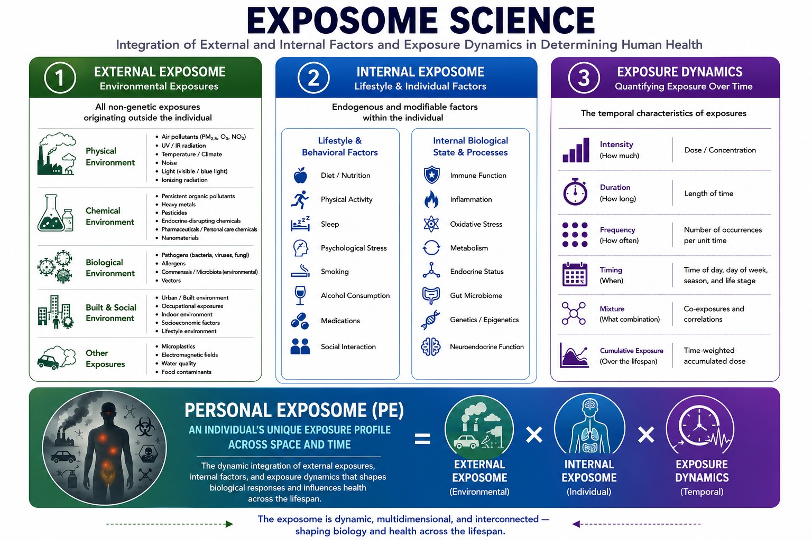
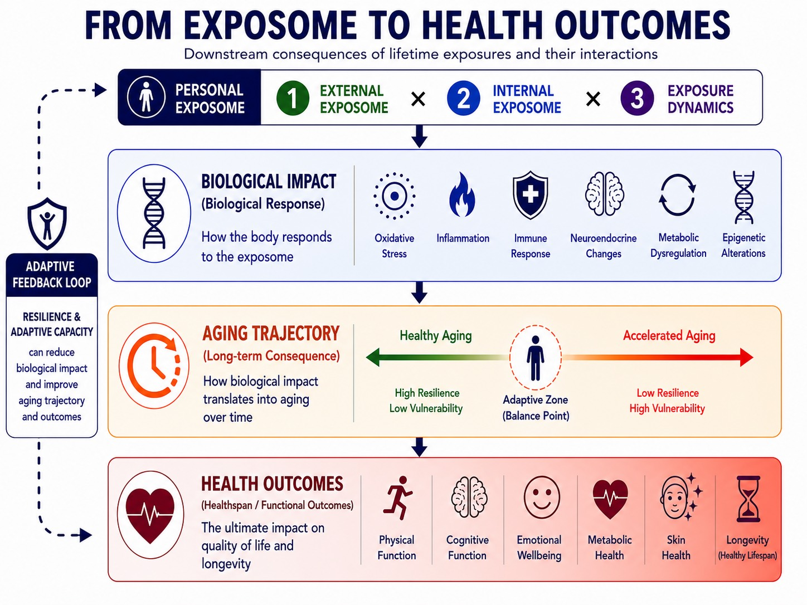
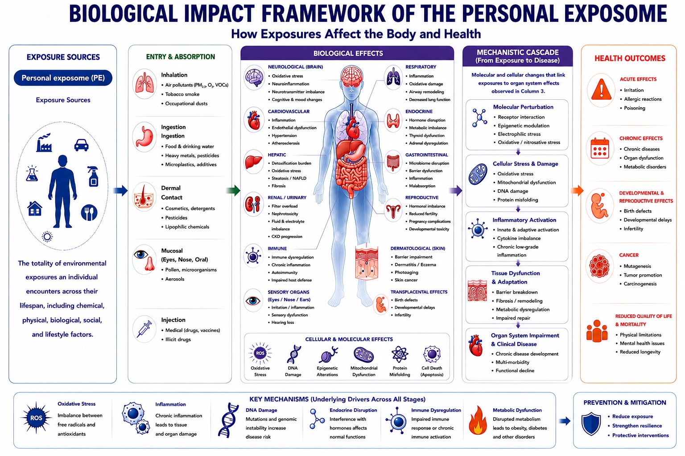
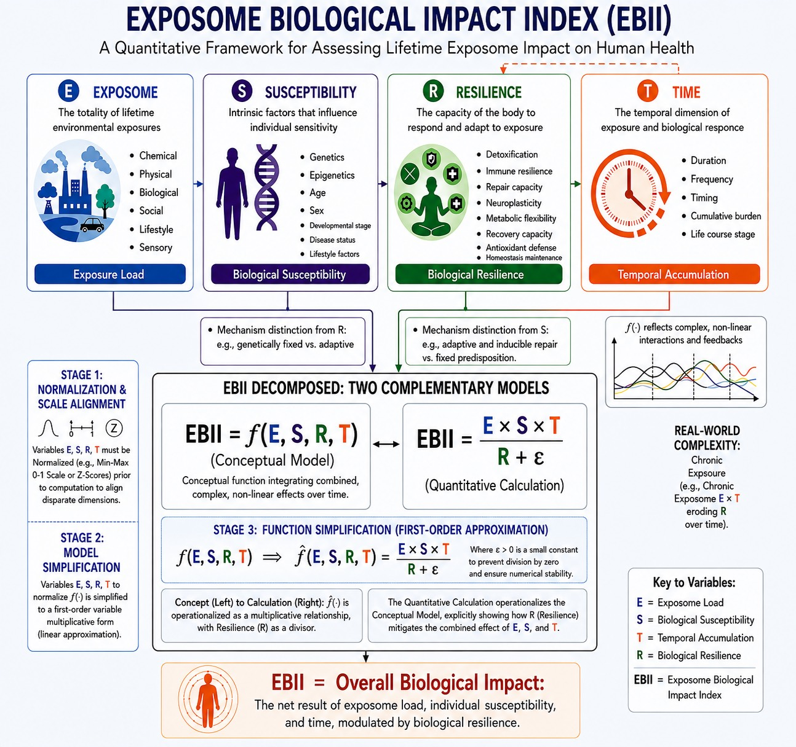
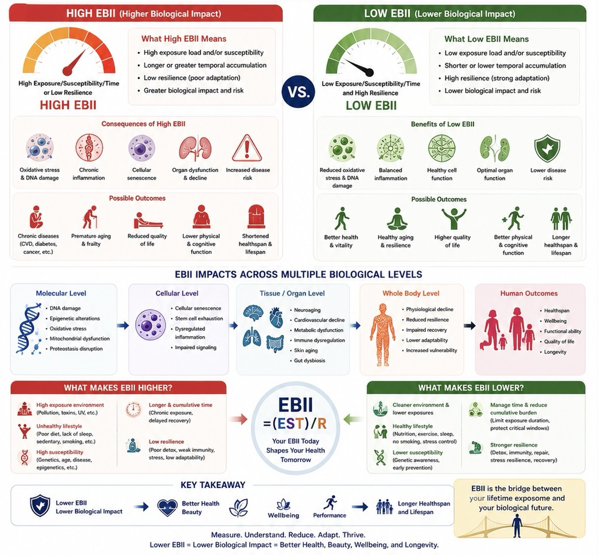

Integration of External and Internal Factors and Exposure Dynamics in Determining Human Health

1
EXTERNAL EXPOSOME
Environmental Exposures
All non-genetic exposures originating outside the individual
Physical Environment
Air pollutants (PM₂.₅, O₃, NO₂)
UV / IR radiation
Temperature / Climate
Noise
Light (visible / blue light)
Ionizing radiation
Chemical Environment
Persistent organic pollutants
Heavy metals
Pesticides
Endocrine-disrupting chemicals
Pharmaceuticals / Personal care chemicals
Nanomaterials
Biological Environment
Pathogens (bacteria, viruses, fungi)
Allergens
Commensals / Microbiota (environmental)
Vectors
Built & Social Environment
Urban / Built environment
Occupational exposures
Indoor environment
Socioeconomic factors
Lifestyle environment
Other Exposures
Microplastics
Electromagnetic fields
Water quality
Food contaminants
2
INTERNAL EXPOSOME
Lifestyle & Individual Factors
Endogenous and modifiable factors within the individual
Lifestyle & Behavioral Factors
Diet / Nutrition
Physical Activity
Sleep
Psychological Stress
Smoking
Alcohol Consumption
Medications
Social Interaction
Internal Biological State & Processes
Immune Function
Inflammation
Oxidative Stress
Metabolism
Endocrine Status
Gut Microbiome
Genetics / Epigenetics
Neuroendocrine Function
3
EXPOSURE DYNAMICS
Quantifying Exposure Over Time
The temporal characteristics of exposures
Intensity(How much)
Dose / Concentration
Duration(How long)
Length of time
Frequency(How often)
Number of occurrences per unit time
Timing(When)
Time of day, day of week, season, and life stage
Mixture(What combination)
Co-exposures and correlations
Cumulative Exposure(Over the lifespan)
Time-weighted accumulated dose
PERSONAL EXPOSOME (PE)
AN INDIVIDUAL’S UNIQUE EXPOSURE PROFILE ACROSS SPACE AND TIME
The dynamic integration of external exposures, internal factors, and exposure dynamics that shapes biological responses and influences health across the lifespan.
=
EXTERNAL EXPOSOME(Environmental)
×
INTERNAL EXPOSOME(Individual)
×
EXPOSURE DYNAMICS(Temporal)
The exposome is dynamic, multidimensional, and interconnected — shaping biology and health across the lifespan.
Section 02
From Exposome to Health Outcomes
Downstream Consequences of Lifetime Exposures and Their Interactions

ADAPTIVE FEEDBACK LOOP
RESILIENCE & ADAPTIVE CAPACITY
can reduce biological impact and improve aging trajectory and outcomes
PERSONAL EXPOSOME=1EXTERNAL EXPOSOME×2INTERNAL EXPOSOME×3EXPOSURE DYNAMICS
BIOLOGICAL IMPACT
(Biological Response)
How the body responds to the exposome
Oxidative Stress
Inflammation
Immune Response
Neuroendocrine Changes
Metabolic Dysregulation
Epigenetic Alterations
AGING TRAJECTORY
(Long-term Consequence)
How biological impact translates into aging over time
Healthy AgingAccelerated Aging
High Resilience Low VulnerabilityAdaptive Zone (Balance Point)Low Resilience High Vulnerability
HEALTH OUTCOMES
(Healthspan / Functional Outcomes)
The ultimate impact on quality of life and longevity
Physical Function
Cognitive Function
Emotional Wellbeing
Metabolic Health
Skin Health
Longevity (Healthy Lifespan)
Section 03
Biological Impact Framework of the Personal Exposome
How Exposures Affect the Body and Health

EXPOSURE SOURCES
Personal exposome (PE)
Exposure Sources
The totality of environmental exposures an individual encounters across their lifespan, including chemical, physical, biological, social, and lifestyle factors.
ENTRY & ABSORPTION
Inhalation
Air pollutants (PM₂.₅, O₃, VOCs)
Tobacco smoke
Occupational dusts
Ingestion
Food & drinking water
Heavy metals, pesticides
Microplastics, additives
Dermal Contact
Cosmetics, detergents
Pesticides
Lipophilic chemicals
Mucosal (Eyes, Nose, Oral)
Pollen, microorganisms
Aerosols
Injection
Medical drugs, vaccines
Illicit drugs
BIOLOGICAL EFFECTS
NEUROLOGICAL (BRAIN)
Oxidative stress
Neuroinflammation
Neurotransmitter imbalance
Cognitive & mood changes
CARDIOVASCULAR
Inflammation
Endothelial dysfunction
Hypertension
Atherosclerosis
HEPATIC
Detoxification burden
Oxidative stress
Steatosis / NAFLD
Fibrosis
RENAL / URINARY
Filter overload
Nephrotoxicity
Fluid & electrolyte imbalance
CKD progression
IMMUNE
Immune dysregulation
Chronic inflammation
Autoimmunity
Impaired host defense
SENSORY ORGANS
Irritation / inflammation
Sensory dysfunction
Hearing loss
RESPIRATORY
Inflammation
Oxidative damage
Airway remodeling
Decreased lung function
ENDOCRINE
Hormone disruption
Metabolic imbalance
Thyroid dysfunction
Adrenal dysregulation
GASTROINTESTINAL
Microbiome disruption
Barrier dysfunction
Inflammation
Malabsorption
REPRODUCTIVE
Hormonal imbalance
Reduced fertility
Pregnancy complications
Developmental toxicity
DERMATOLOGICAL (SKIN)
Barrier impairment
Dermatitis / Eczema
Photoaging
Skin cancer
TRANSPLACENTAL EFFECTS
Birth defects
Developmental delays
Infertility
CELLULAR & MOLECULAR EFFECTS
Oxidative StressDNA DamageEpigenetic AlterationsMitochondrial DysfunctionProtein MisfoldingCell Death (Apoptosis)
MECHANISTIC CASCADE
(From Exposure to Disease)
Molecular and cellular changes that link exposures to organ system effects observed in Column 3.
Molecular Perturbation
Receptor interaction
Epigenetic modulation
Electrophilic stress
Oxidative / nitrosative stress
Cellular Stress & Damage
Oxidative stress
Mitochondrial dysfunction
DNA damage
Protein misfolding
Inflammatory Activation
Innate & adaptive activation
Cytokine imbalance
Chronic low-grade inflammation
Tissue Dysfunction & Adaptation
Barrier breakdown
Fibrosis / remodeling
Metabolic dysregulation
Impaired repair
Organ System Impairment & Clinical Disease
Chronic disease development
Multi-morbidity
Functional decline
HEALTH OUTCOMES
ACUTE EFFECTS
Irritation
Allergic reactions
Poisoning
CHRONIC EFFECTS
Chronic diseases
Organ dysfunction
Metabolic disorders
DEVELOPMENTAL & REPRODUCTIVE EFFECTS
Birth defects
Developmental delays
Infertility
CANCER
Mutagenesis
Tumor promotion
Carcinogenesis
REDUCED QUALITY OF LIFE & MORTALITY
Physical limitations
Mental health issues
Reduced longevity
KEY MECHANISMS (Underlying Drivers Across All Stages)
Oxidative Stress
Imbalance between free radicals and antioxidants
Inflammation
Chronic inflammation leads to tissue and organ damage
DNA Damage
Mutations and genomic instability increase disease risk
Endocrine Disruption
Interference with hormones affects normal functions
Immune Dysregulation
Impaired immune response or chronic activation
Metabolic Dysfunction
Disrupted metabolism leads to obesity, diabetes and other disorders
PREVENTION & MITIGATION
Reduce exposure
Strengthen resilience
Protective interventions
Section 04
Exposome Biological Impact Index (EBII)
A Quantitative Framework for Assessing Lifetime Exposome Impact on Human Health

E
EXPOSOME
The totality of lifetime environmental exposures
Chemical
Physical
Biological
Social
Lifestyle
Sensory
Exposure LoadS
SUSCEPTIBILITY
Intrinsic factors that influence individual sensitivity
Genetics
Epigenetics
Age
Sex
Developmental stage
Disease status
Lifestyle factors
Biological SusceptibilityR
RESILIENCE
The capacity of the body to respond and adapt to exposure
Detoxification
Immune resilience
Repair capacity
Neuroplasticity
Metabolic flexibility
Recovery capacity
Antioxidant defense
Homeostasis maintenance
Biological ResilienceT
TIME
The temporal dimension of exposure and biological response
Duration
Frequency
Timing
Cumulative burden
Life course stage
Temporal Accumulation
EBII DECOMPOSED: TWO COMPLEMENTARY MODELS
EBII = f(E, S, R, T)(Conceptual Model)
Conceptual function integrating combined, complex, non-linear effects over time.
EBII = E × S × TR + ε(Quantitative Calculation)
STAGE 3: FUNCTION SIMPLIFICATION (FIRST-ORDER APPROXIMATION)
f(E,S,R,T) ⇒ f̂(E,S,R,T) = E × S × TR + ε
Where ε > 0 is a small constant to prevent division by zero and ensure numerical stability.
Concept (Left) to Calculation (Right): f̂(·) is operationalized as a multiplicative relationship, with Resilience (R) as a divisor.
The quantitative calculation explicitly shows how R mitigates the combined effect of E, S, and T.
EBII = Overall Biological Impact:
The net result of exposome load, individual susceptibility, and time, modulated by biological resilience.
Section 05
High EBII vs Low EBII
How Exposure, Susceptibility, Time, and Resilience Shape Biological Impact

HIGH EBII (Higher Biological Impact)
High Exposure/Susceptibility/Time or Low ResilienceHIGH EBII
What High EBII Means
High exposure load and/or susceptibility
Longer or greater temporal accumulation
Low resilience (poor adaptation)
Greater biological impact and risk
Consequences of High EBII
Oxidative stress & DNA damage
Chronic inflammation
Cellular senescence
Organ dysfunction & decline
Increased disease risk
Possible Outcomes
Chronic diseases (CVD, diabetes, cancer, etc.)
Premature aging & frailty
Reduced quality of life
Lower physical & cognitive function
Shortened healthspan & lifespan
VS.
LOW EBII (Lower Biological Impact)
Low Exposure/Susceptibility/Time and High ResilienceLOW EBII
 Physical
Physical Chemical
Chemical Biological
Biological Built & Social
Built & Social Other
Other


 Intensity(How much)
Intensity(How much) Duration(How long)
Duration(How long) Frequency(How often)
Frequency(How often) Timing(When)
Timing(When) Mixture(What combination)
Mixture(What combination) Cumulative Exposure(Over the lifespan)
Cumulative Exposure(Over the lifespan)
.png) EXTERNAL
EXTERNAL.png) INTERNAL
INTERNAL.png) EXPOSURE
EXPOSURE


 NEUROLOGICAL (BRAIN)
NEUROLOGICAL (BRAIN) CARDIOVASCULAR
CARDIOVASCULAR HEPATIC
HEPATIC RENAL / URINARY
RENAL / URINARY IMMUNE
IMMUNE SENSORY ORGANS
SENSORY ORGANS
 RESPIRATORY
RESPIRATORY ENDOCRINE
ENDOCRINE GASTROINTESTINAL
GASTROINTESTINAL REPRODUCTIVE
REPRODUCTIVE DERMATOLOGICAL (SKIN)
DERMATOLOGICAL (SKIN) Oxidative Stress
Oxidative Stress DNA Damage
DNA Damage Epigenetic Alterations
Epigenetic Alterations Mitochondrial Dysfunction
Mitochondrial Dysfunction Protein Misfolding
Protein Misfolding Cell Death (Apoptosis)
Cell Death (Apoptosis) Molecular Perturbation
Molecular Perturbation Cellular Stress & Damage
Cellular Stress & Damage Inflammatory Activation
Inflammatory Activation Tissue Dysfunction & Adaptation
Tissue Dysfunction & Adaptation Organ System Impairment & Clinical Disease
Organ System Impairment & Clinical Disease ACUTE EFFECTS
ACUTE EFFECTS CHRONIC EFFECTS
CHRONIC EFFECTS DEVELOPMENTAL &
DEVELOPMENTAL & CANCER
CANCER REDUCED QUALITY OF LIFE
REDUCED QUALITY OF LIFE Oxidative Stress
Oxidative Stress Inflammation
Inflammation DNA Damage
DNA Damage Endocrine Disruption
Endocrine Disruption Immune Dysregulation
Immune Dysregulation Metabolic Dysfunction
Metabolic Dysfunction


 High Exposure/Susceptibility/Time
High Exposure/Susceptibility/Time


 Low Exposure/Susceptibility/Time
Low Exposure/Susceptibility/Time


 High exposure environmentPollution, toxins, UV, etc.
High exposure environmentPollution, toxins, UV, etc..png) Unhealthy lifestylePoor diet, lack of sleep, sedentary, smoking, etc.
Unhealthy lifestylePoor diet, lack of sleep, sedentary, smoking, etc. High susceptibilityGenetics, age, disease, epigenetics, etc.
High susceptibilityGenetics, age, disease, epigenetics, etc. Longer & cumulative timeChronic exposure, delayed recovery
Longer & cumulative timeChronic exposure, delayed recovery Low resiliencePoor detox, weak immunity, stress, low adaptability
Low resiliencePoor detox, weak immunity, stress, low adaptability Cleaner environment & lower exposures
Cleaner environment & lower exposures Healthy lifestyleNutrition, exercise, sleep, no smoking, stress control
Healthy lifestyleNutrition, exercise, sleep, no smoking, stress control Lower susceptibilityGenetic awareness, early prevention
Lower susceptibilityGenetic awareness, early prevention Manage time & reduce cumulative burdenLimit exposure duration, protect critical windows
Manage time & reduce cumulative burdenLimit exposure duration, protect critical windows Stronger resilienceDetox, immunity, repair, stress resilience, recovery
Stronger resilienceDetox, immunity, repair, stress resilience, recovery